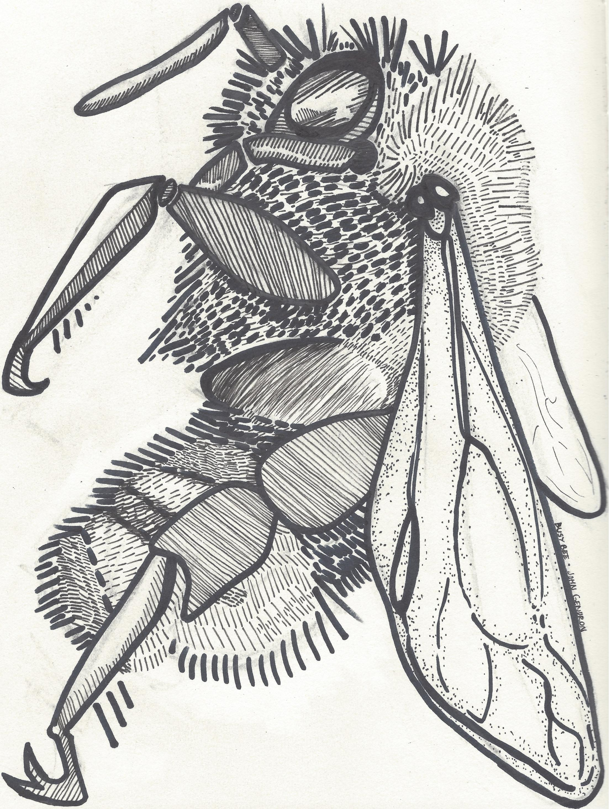
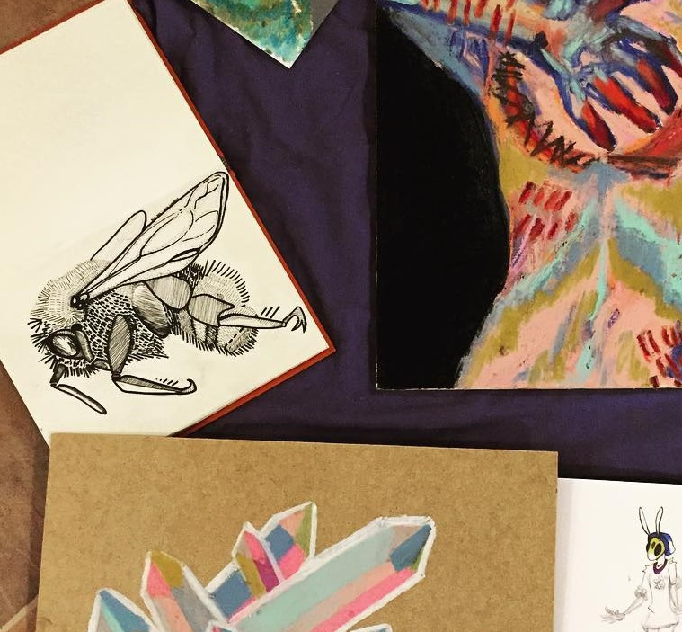

 

The Obscure Bumblebee
In an attempt to play with markmaking and create an effective piece to silkscreen for the class I was about to take at Pickwick's I thought it would be a fun idea to finally draw my usernamesake, the Obscure Bumblebee or Bombus Caligunosis.
While clearly there are mistakes here and there, I actually ended up enjoying these bees a lot. I thought they had enough line variation to stay interesting but not bee-come to busy or overwhelming, which I have been struggling with achieving. The lines are also fairly clean and cohesive, which I've been putting more effort into making sure I can accomplish latley.
I think what I enjoyed the most of these bees was learning how to make them. My first ever experience with silkscreen really made me think of how easily the medium can be used, and how effecient it is when making large prints or posters. It was an experience I really enjoyed, and it's made me start thinking of how I can incorporate more of it into my artwork.